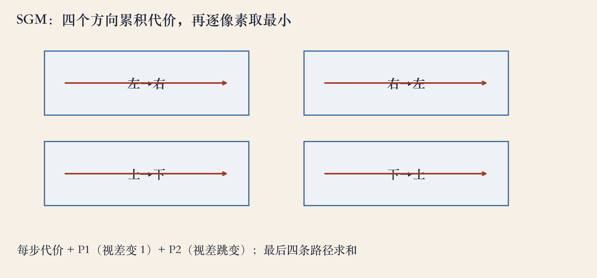
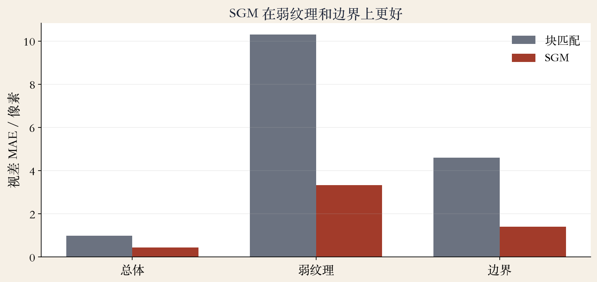
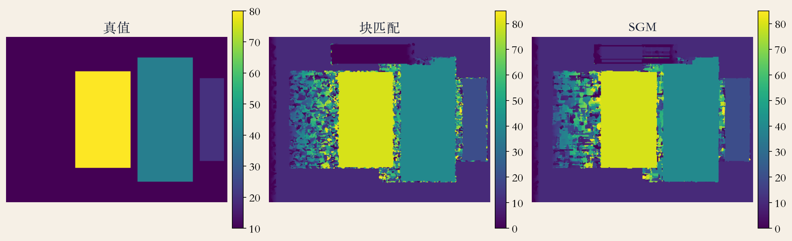

第 12 章 · 12.5.1 动态规划
SGM：沿扫描线找最小路径
- 两条对应扫描线，先算两两匹配代价。
- 动态规划找一条总代价最小的路径。
- 路径每个点给出一个视差值。
- 顺序约束：扫描线内像素次序不能乱。
依据：原书第 774 页
动态规划 · 遮挡与惩罚
斜走是匹配，平走是遮挡
- 部分遮挡：一组像素对另一张图的一个像素。
- 每个状态加 DSI 匹配代价和前驱代价。
- 遮挡像素加一个固定惩罚。
- 斜走一步表示匹配，水平或垂直走表示遮挡。
依据：原书第 774–775 页
路径的选择
匹配错，还是承认看不见
遮挡惩罚通常小于匹配错代价
惩罚太大，会把匹配当遮挡
一维 DP 的局限
逐行优化，条纹与顺序问题
- 遮挡代价不好选，扫描线之间难一致。
- 一行一行独立优化，结果出现横向条纹。
- 窄前景挡住后面的点，顺序约束被违反。
- 一维 DP 快，但最优只在单行成立。
依据：原书第 775 页
半全局匹配 · 多方向
多个方向，各做一维 DP
- 把多个方向的累积代价加起来。
- 原书举八个方向：N、E、W、S、NE、SE、SW、NW。
- SGM 效果更好，而且高效，可做实时低功耗。
- 四个方向已能压住大部分条纹。
依据：原书第 775 页
为什么叫半全局
每个方向沿一条线传播
没有解二维全局优化
方向越多越贵
实验实现 · 四路径
四张累积代价图相加
- 左到右、右到左、上到下、下到上。
- 每个方向做一次一维动态规划。
- 四张累积代价图相加后取最小。
- 每个像素的代价融合四个方向的支持。
依据：本集实验

SGM 四方向：左→右、右→左、上→下、下→上，累积后取最小｜程序生成，未用教材或论文原图
平滑项 · P1 与 P2
P1 管缓变，P2 管跳变
- P1：相邻像素视差变 1 的代价。
- P2：视差大跳变的代价，一般大于 P1。
- P2 太小边界会糊，太大弱纹理会拉平。
- 很多实现让 P2 随图像梯度自适应。
依据：原书第 775 页；本集实验
实验取值
P1 = 0.02
P2 = 0.12
P2 大于 P1
合成双目实验 · 误差
弱纹理与边界都被压下去
- 总体误差从 0.98 降到 0.44 像素。
- 弱纹理从 10.31 降到 3.33。
- 边界从 4.59 降到 1.41。
- 块匹配在弱纹理块里接近乱猜。
依据：本集实验

块匹配 vs SGM：总体 0.98→0.44，弱纹理 10.31→3.33，边界 4.59→1.41｜程序生成，未用教材或论文原图
实验设置 · 320×240
人为挖一块弱纹理
- 上一集合成双目降到 320×240。
- 视差范围 0–85，代价用 3×3 SAD。
- 背景左上角挖一块无纹理平地。
- 左右图填同一灰度，统计剔除遮挡和边界。
依据：本集实验
设置
320×240
视差 0–85
3×3 SAD
弱纹理块单独统计
结果 · 剔除遮挡与边界
收益来自弱纹理和边界
- SGM 总体 0.44，块匹配 0.98。
- 弱纹理 3.33 对 10.31。
- 边界 1.41 对 4.59。
- 遮挡区仍然没有办法，要后处理。
依据：本集实验
视差图对比
弱纹理块被填平
- 真值、块匹配、SGM 三张视差图。
- 块匹配在弱纹理块里是一团噪声。
- SGM 基本填成背景视差，边界更整齐。
- 细长结构、重复纹理仍会错。
依据：本集实验

真值/块匹配/SGM：弱纹理块被 SGM 填平，边界更整齐｜程序生成，未用教材或论文原图
工程边界
内存、参数与失败边界
- 代价体大小为宽×高×视差范围。
- 视差范围大、分辨率高，内存和带宽吃紧。
- P1/P2 没有通用值，要按场景调。
- 实时实现常用多核、SIMD 或 FPGA。
依据：原书第 775 页；本集实验
收束 · 下一集
SGM 的三句话
- 多方向一维动态规划，近似二维全局优化。
- P1/P2 控制平滑与边界，参数按场景调。
- 弱纹理和边界改善，遮挡与细结构靠后处理。
- 下一集：PSM-Net 与端到端立体匹配。
依据：原书第 774–775 页；本集实验